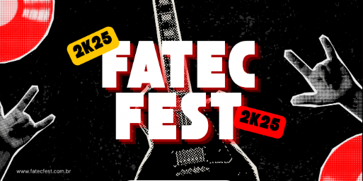

NOSSOS PROJETOS
Resultados reais, impacto local.
Veja como aplicamos o conhecimento da Fatec Jundiaí para resolver desafios reais de empresas da região.

Projetos e Eventos
Fatec Fest 2025 (Hangar 111)
Gestão integral da produção, curadoria de atrações e marketing digital do Fatec Fest 2025. O evento foi estruturado para entregar uma experiência musical imersiva e um ambiente premium de networking, visando consolidar o evento como a principal noite de celebração e integração da comunidade acadêmica.
Sua empresa pode ser nosso próximo case de sucesso.
Vamos agendar uma conversa sem compromisso. Entenda como o conhecimento da Fatec pode resolver seu desafio.
Solicite um Diagnóstico Gratuito